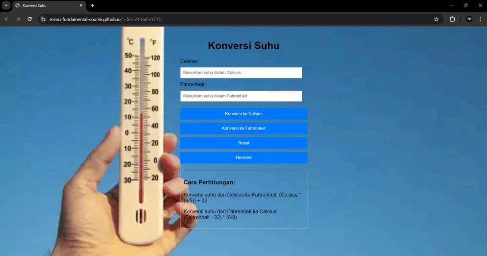

Temperature Converter Website
A simple and user-friendly web tool for temperature conversion.

Project Background
This project was created to demonstrate fundamental front-end web development skills. It is a user-friendly Temperature Converter website that enables instant and accurate conversion between Celsius and Fahrenheit, designed with a simple interface for quick results.
Technology Stack
Implementation Details
The core logic was implemented in vanilla JavaScript. I used DOM manipulation to get user input from the text fields and display the results. Event listeners were attached to the buttons to trigger the conversion functions, which contain the mathematical formulas for converting between Celsius and Fahrenheit. A "reverse" function was also added to swap the input values for user convenience.